Формулы в программе Microsoft Excel
В предыдущем уроке я показывал, как считать в программе Эксель. Но бывает, что нужно сделать слишком много вычислений, и высчитывать каждое значение по отдельности будет очень долго. Есть способ ускорить этот процесс.
Посмотрите на таблицу, которую мы составили в предыдущем уроке.
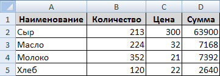Начиная с D2 и заканчивая D5, мы считали, используя одну и ту же формулу =Bn*Cn
Число n в нашем случае – это номер ячейки, то есть номер строки, в которой она находится.
В этой табличке только четыре пункта: Сыр, Масло, Молоко, Хлеб. Поэтому нас не сильно затруднило вычислить сумму по каждому наименованию отдельно. Это даже полезно: ведь, как известно, повторение – мать учения. Но что делать, если в таблице не четыре наименования, а сто сорок четыре?! Неужели каждое значение придется считать отдельно?!
К счастью, есть более простой способ. Дело в том, что Excel – программа «умная», и она многое «понимает». Если мы вычислим значение при помощи формулы, то Эксель сможет применить ее к другим ячейкам. Попробуем это на нашей таблице.
Удалите все цифры в столбике «Сумма». Проще всего выделить значения с D2 по D5 и нажать кнопку Delete (Del) на клавиатуре. Таким образом содержимое очистится.
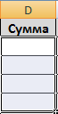Теперь еще раз посчитаем «Сумму». Напомню, для этого мы печатали в D2 знак равно (=), нажимали на ячейку B2, затем печатали знак умножения (*), нажимали на C2 и нажимали кнопку Enter на клавиатуре.
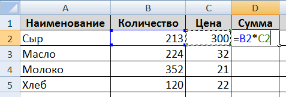То есть наша формула выглядит следующим образом: =B2*C2
Проверить это можно, нажав на ячейку D2 и посмотрев в верхнюю строку программы Excel.

А теперь попробуем эту формулу применить к другим ячейкам (D3, D4, D5). Для этого щелкните по D2. Ячейка выделится рамочкой. В нижнем правом углу этой рамочки есть небольшой квадратик. Вот он-то нам и нужен.
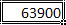Если Вы наведете на этот квадратик курсор (плюсик), то он примет вид черного знака плюс (+).
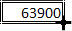Вот когда он стал таким плюсом, нужно нажать на левую кнопку мыши и, не отпуская ее, тянуть вниз до последней нужной нам ячейки (D5).
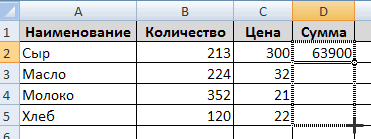Отпустив левую кнопку мыши, программа посчитает значения в каждой ячейке, исходя из указанной формулы =Bn*Cn
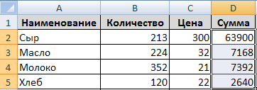Таким образом, Excel «понял», что нужно сделать, и успешно с этим справился.
А теперь другой пример. Напечатаем в А10 число 45, в А11 — 35, А12 — 25, А13 — 15. В ячейке В10 нужно посчитать, сколько будет А10/5. То есть, печатаем в В10 знак =, затем щелкаем по А10, делим на 5 и нажимаем Enter на клавиатуре. Итого, получилась формула =А10/5
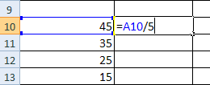Теперь выделим В10 (щелкнем по ней) и, «схватившись» за маленький черный квадратик внизу, потянем до В13.
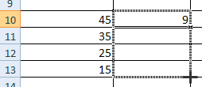Эксель «применил» введенную формулу к другим ячейкам.
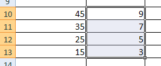Нумерация строк в Экселе
Ну, и напоследок, еще один пример того, насколько программа Microsoft Excel многофункциональна.
Введите в F2 число 1, а в F3 – число 2.
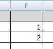Теперь выделите их.
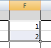Нажмите на маленький черный квадратик внизу справа и, не отпуская мышку, тяните до F10.
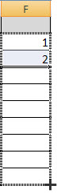Когда Вы отпустите левую кнопку мыши, вот что произойдет.
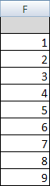Excel «понял», что нам нужны числа по возрастанию и напечатал их за нас. Таким образом, он быстро пронумеровал строки в таблице.